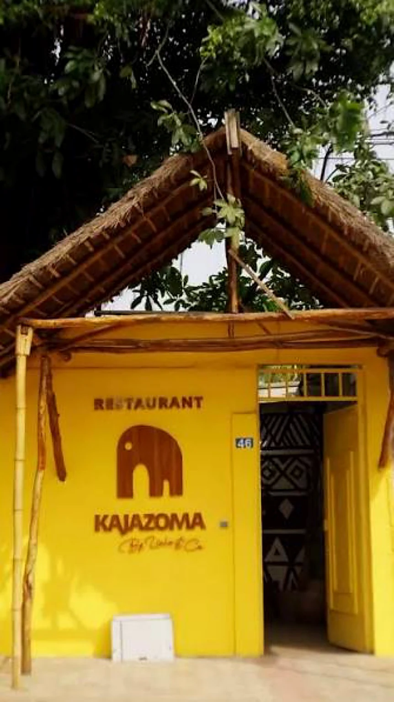
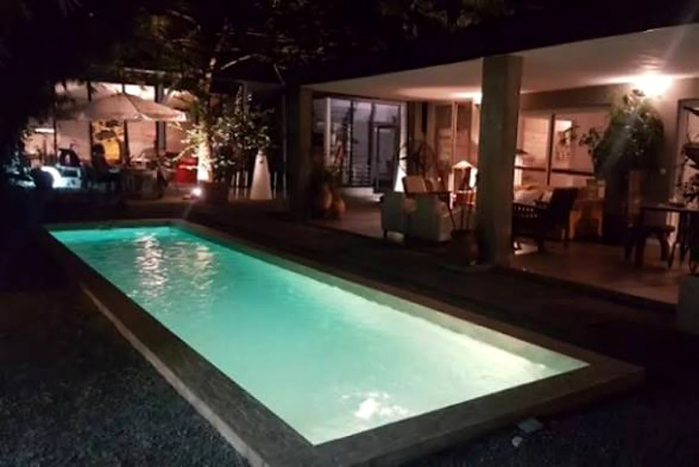
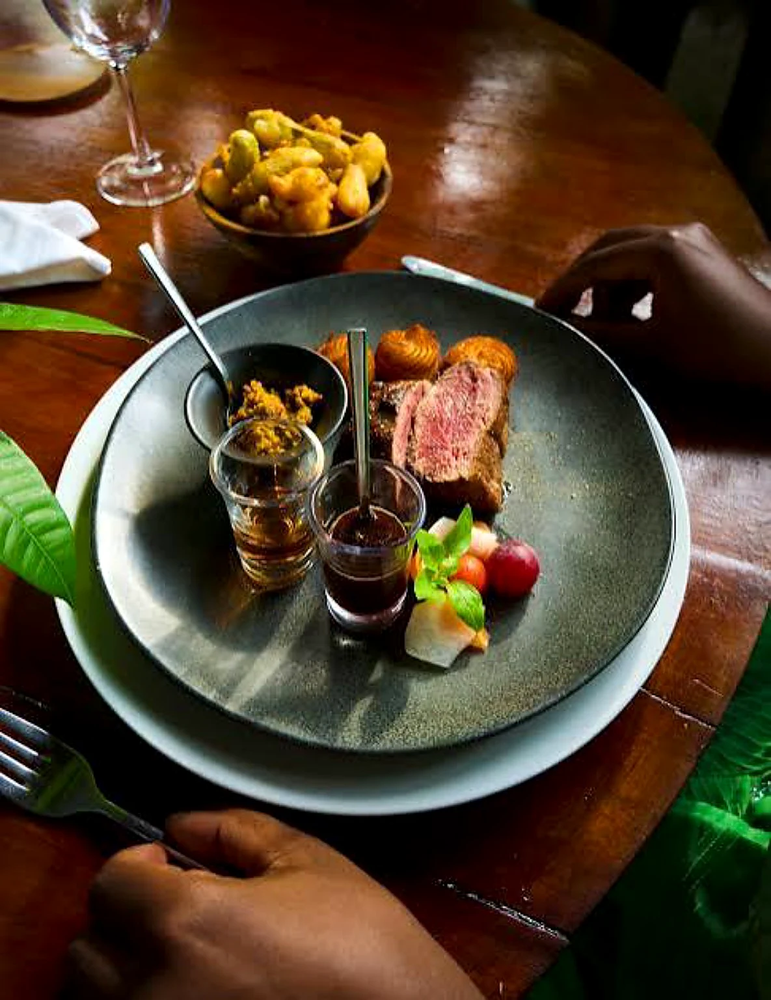

Deux-Plateaux · Cocody · Abidjan
L'art de recevoir,
à la Kajazoma.
Un restaurant-galerie où cuisine, cocktails, objets d'art et jardin se rencontrent.
Un lieu pour manger,
boire et découvrir.
Kajazoma est présenté en ligne comme un lieu qui fusionne restaurant, galerie d'art et expérience culinaire au cœur de Cocody.
La carte mêle influences africaines et internationales, tandis que le cadre fait une large place au jardin, aux objets d'art et aux espaces extérieurs.
Explorer la galerie →Un cadre qui se découvre
avant même la première bouchée.

Restaurant.
Galerie.
Jardin.
Une adresse pensée comme une expérience : cuisine, cocktails, objets d'art et espaces extérieurs se répondent dans une même atmosphère.
Voir le lieu →
Une carte à parcourir,
pas seulement à consulter.
Des influences africaines et internationales, des plats à partager, des signatures, des douceurs et une vraie place donnée aux cocktails.

Filet de bœuf
Une pièce mise en scène dans l'esprit de la maison : généreuse, élégante et pensée pour la table.
Découvrir la carte →Les cocktails prennent
le relais.
Quand la lumière baisse, le jardin devient le décor des conversations, des verres et des soirées au Kajazoma.
Une adresse pensée comme une galerie.
Les sources publiques décrivent un décor mêlant jardin, terrasse, piscine et objets d'art, avec une identité de restaurant-concept-store.
Voir les photosGalerie
Photos réelles issues des contenus fournis et de sources publiques du restaurant.
« Un lieu où l'on vient pour la table, et où l'on reste pour l'atmosphère. »KAJAZOMA
Quand venir ?
Horaires publiés sur la fiche menu actuelle ; à confirmer les jours fériés.
Votre table
vous attend.
Pour déjeuner, dîner ou simplement profiter du lieu.
Réserver sur WhatsApp ↗+225 07 05 10 67 17Kajazoma
34 Rue Appéla Yao · Deux-Plateaux · Cocody · Abidjan